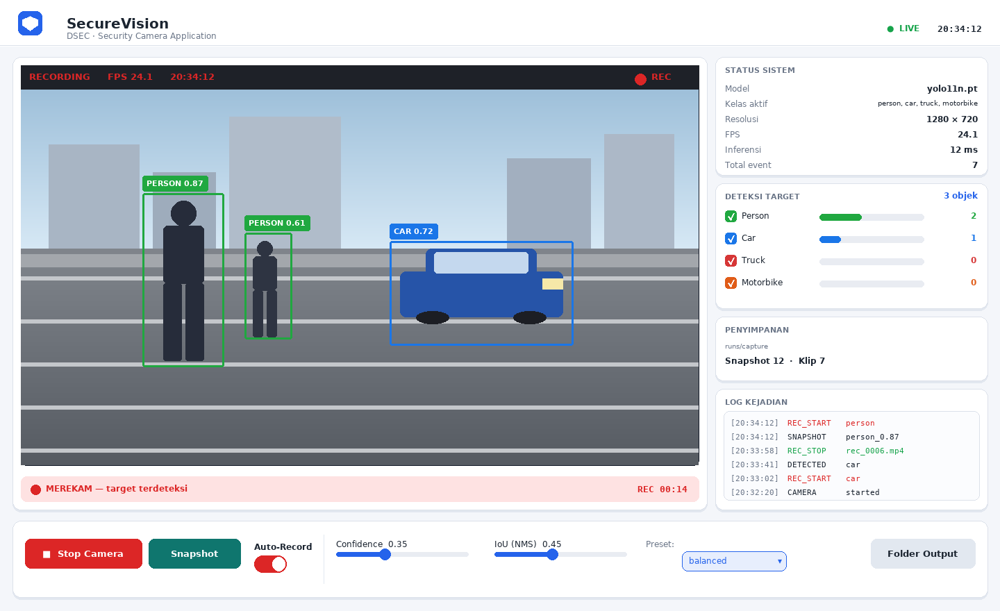

https://colab.research.google.com/github/zahran-rzq/DSEC_ets_object_detection/blob/arena/e1293095-dsec-ets-object-detection/DSEC_Security_Camera_ETS.ipynb
https://colab.research.google.com/github/zahran-rzq/DSEC_ets_object_detection/blob/arena/e1293095-dsec-ets-object-detection/DSEC_Security_Camera_ETS.ipynb
person · car · truck · motorbike dengan Auto-Snapshot & Auto-RecordingMata Kuliah : Deep Learning for Security (DSEC)
Tugas : Soal 2 — Evaluasi Tengah Semester (ETS) — Bobot 50%
Topik : Object Detection dengan Model Pre-Trained untuk Sistem Pengawasan Cerdas
Sistem pengawasan konvensional (CCTV analog) hanya merekam dan menyimpan; proses
"mengawasi" masih dilakukan manusia secara pasif. Kelemahannya terukur: operator
kehilangan konsentrasi setelah ±20 menit menatap layar, dan 1 operator tidak
mampu memantau lebih dari 4–9 kamera sekaligus. Akibatnya, kejadian penting
sering baru diketahui setelah ditelusuri ulang berjam-jam kemudian.
Pendekatan deep learning mengubah paradigma ini menjadi pengawasan aktif:
komputer mendeteksi objek tertentu secara otomatis, lalu hanya merekam saat
ada kejadian yang relevan. Manfaatnya tiga kali lipat — (1) peringatan
real-time, (2) media penyimpanan hemat karena tidak menyimpan jam-jam rekaman
kosong, dan (3) pencarian forensik cepat karena setiap klip sudah terindeks
berdasarkan kelas objek dan waktu.
Tugas ini meminta rancangan aplikasi desktop kamera keamanan yang:
1. terhubung ke webcam secara real-time,
2. hanya memproses empat kelas target: person, car, truck, motorbike,
3. otomatis menyimpan gambar dan merekam video ketika kelas tersebut
terdeteksi.
Berdasarkan latar belakang di atas, rumusan masalahnya adalah:
Tujuan — menghasilkan rancangan komprehensif dan proof-of-concept yang
dapat dijalankan: notebook Google Colab untuk pelatihan/evaluasi, serta aplikasi
desktop Python dengan GUI bertema terang, deteksi 4 kelas, dan perekaman otomatis.
Ruang lingkup — deteksi objek 2D pada aliran video visible-light (kamera
tampak). Diluar cakupan: pengenalan wajah/identitas, pelacakan lintas-kamera,
analitik perilaku tingkat lanjut, dan segmentasi.
| Tugas | Keluaran | Cocok untuk keamanan? |
|---|---|---|
| Klasifikasi | 1 label per gambar ("ada orang") | ❌ tidak tahu di mana objeknya |
| Lokalisasi | 1 label + 1 kotak | ❌ hanya satu objek |
| Deteksi objek | banyak label + banyak kotak | ✅ bisa banyak objek sekaligus |
| Segmentasi | label per piksel | ✅ akurat tapi jauh lebih berat |
Kamera keamanan membutuhkan deteksi objek: harus mengetahui ada apa dan
di mana, untuk banyak objek sekaligus dalam satu frame.
Untuk kamera keamanan yang harus memberi peringatan seketika, latensi adalah
persyaratan utama → dipilih YOLO.
YOLO membagi citra menjadi grid $S \times S$. Setiap sel memprediksi $B$ kotak
pembatas beserta objectness score dan probabilitas kelas:
$$
\text{output per sel} = \big[\,x, y, w, h, p_{obj}, p_{c_1}, \dots, p_{c_n}\,\big]
$$
Skor akhir tiap kotak: $\text{score} = p_{obj} \times \max_c p_c$.
Karena ribuan kotak tumpang-tindih dihasilkan, diperlukan Non-Maximum
Suppression (NMS): urutkan kotak berdasar skor, pertahankan yang tertinggi,
lalu hapus kotak lain dengan $\mathrm{IoU} > t_{NMS}$ terhadapnya.
Melatih detektor dari nol butuh puluhan ribu gambar beranotasi dan GPU
berhari-hari. Transfer learning memakai model yang sudah dilatih pada
COCO (80 kelas, 118.000 gambar, 330.000 instance) sebagai titik awal.
Fitur tingkat rendah (tepi, sudut, tekstur) bersifat universal, sehingga
cukup di-fine-tune dengan ratusan gambar domain keamanan.
Yang terpenting untuk tugas ini: keempat kelas target sudah ada di COCO,
sehingga model pre-trained dapat dipakai tanpa training sekalipun.
| Kelas target (soal) | Nama di COCO | ID COCO |
|---|---|---|
| person | person | 0 |
| car | car | 2 |
| truck | truck | 7 |
| motorbike | motorcycle | 3 |
⚠️ Catatan penting untuk presentasi: istilah "motorbike" pada soal
sama dengan kelas "motorcycle" (id 3) pada COCO. Perbedaan hanya penamaan,
objeknya identik.
┌──────────────────────────────────────────────────────────────────────────┐
│ LAPISAN AKUISISI │
│ Webcam / CCTV RTSP ──► OpenCV VideoCapture ──► Frame BGR (1280×720) │
└───────────────────────────────┬──────────────────────────────────────────┘
▼
┌──────────────────────────────────────────────────────────────────────────┐
│ LAPISAN INFERENSI (YOLO) │
│ resize + letterbox 640² ► normalisasi ► forward pass ► NMS (IoU 0.45) │
│ ► FILTER KELAS classes=[0,2,3,7] ► conf per-kelas ► filter area/ROI │
└───────────────────────────────┬──────────────────────────────────────────┘
▼
┌──────────────────────────────────────────────────────────────────────────┐
│ LAPISAN LOGIKA (State Machine) │
│ IDLE ──(objek N frame berturut)──► DETECTING ──► RECORDING ──► COOLDOWN│
└───────────────────────────────┬──────────────────────────────────────────┘
▼
┌──────────────────────────────────────────────────────────────────────────┐
│ LAPISAN PENYIMPANAN BUKTI │
│ Snapshot .jpg │ Klip .mp4 (pre-roll 3s + post-roll 4s) │ events.csv │
└───────────────────────────────┬──────────────────────────────────────────┘
▼
┌──────────────────────────────────────────────────────────────────────────┐
│ LAPISAN ANTARMUKA (GUI Light Theme) │
│ Feed video │ Status deteksi │ Indikator REC │ Tombol kontrol │
└──────────────────────────────────────────────────────────────────────────┘
Modul-modul tersebut diimplementasikan terpisah agar mudah diuji dan diubah:
| Berkas | Tanggung jawab |
|---|---|
src/core/config.py |
Seluruh parameter (kelas, threshold, durasi rekam) |
src/core/detector.py |
Wrapper model YOLO + filter kelas/conf/ROI + anotasi |
src/core/recorder.py |
Ring buffer (pre-roll), penulis MP4, snapshot JPG, log CSV |
src/core/pipeline.py |
State machine pemicu rekaman (inti logika kondisional) |
src/core/metrics.py |
IoU, Precision, Recall, AP, mAP (implementasi mandiri) |
src/app.py |
GUI desktop bertema terang |
src/headless.py |
Mode tanpa GUI (uji otomatis / mini-PC) |
Keputusan: YOLOv11-nano (yolo11n.pt), fallback YOLOv8-nano.
| Kriteria | YOLOv11n / YOLOv8n | Faster R-CNN (R50-FPN) | SSD-MobileNetV2 | EfficientDet-D0 |
|---|---|---|---|---|
| Jenis | single-stage | two-stage | single-stage | single-stage |
| Parameter | ~2,6 M | ~41,5 M | ~4,3 M | ~3,9 M |
| Komputasi | ~6,5 GFLOPs | ~180 GFLOPs | ~1,2 GFLOPs | ~2,5 GFLOPs |
| Kecepatan (T4 GPU) | ~8–12 ms/frame | 140–200 ms | ~25 ms | ~30 ms |
| mAP@50:95 (COCO) | ~39,5 | ~40,2 | ~22 | ~33,8 |
| Ketersediaan bobot | ✅ resmi Ultralytics, 1 baris pip |
tersedia | tersedia | tersedia |
Alasan pemilihan:
YOLO("yolo11n.pt") otomatisclasses= yang.pt 5 MB, dapat diekspor ke ONNX /yolo11s.pt.WEIGHTS = "yolo11n.pt" # bobot pre-trained COCO
IMG_SIZE = 640 # letterbox 640×640 (standar YOLO)
CONF = 0.35 # ambang keyakinan global
IOU_NMS = 0.45 # ambang IoU Non-Maximum Suppression
DEVICE = 0 # GPU; "cpu" bila tanpa GPU
Mengapa IMG_SIZE = 640? Nilai ini adalah titik keseimbangan: cukup besar
untuk mendeteksi orang berukuran sedang–jauh (objek ~30 px masih terdeteksi
berkat feature pyramid), namun tetap ringan. Untuk kamera yang memantau
halaman luas dengan objek kecil, naikkan ke 960–1280; untuk laptop lemah
turunkan ke 416.
Mengapa IOU_NMS = 0.45? Nilai 0,45–0,50 adalah standar COCO. Terlalu
kecil (0,2) akan menghapus kotak sah pada objek yang berdekatan (kerumunan
orang, parkiran motor); terlalu besar (0,8) menyisakan kotak ganda.
Ini adalah inti jawaban pertanyaan 1. Pembatasan dilakukan bertingkat, dari
yang paling hemat komputasi:
classes=[0, 2, 3, 7]results = model.predict(
frame,
imgsz=640,
conf=0.30, # ambang terendah; disaring ulang di lapis 2
iou=0.45, # NMS
classes=[0, 2, 3, 7], # person, car, motorcycle, truck
device=0,
verbose=False,
)
Argumen classes= pada Ultralytics membuat logit 76 kelas lain dibuang
sebelum NMS. Dampaknya nyata:
* komputasi NMS turun karena kandidat kotak jauh lebih sedikit;
* false positive dari kelas mirip — bus, bicycle, dog, cat, chair,
potted plant, traffic light — tidak pernah muncul;
* tidak mungkin lagi terjadi "terdeteksi bus lalu dipetakan ke truck".
Catatan untuk ujian: penyaringan boleh dilakukan di level aplikasi
denganif name in TARGETS: ..., tetapi itu hanya membuang hasil setelah
seluruh komputasi selesai. Menyaring di level model (classes=) adalah
praktik yang benar karena menghemat waktu sekaligus mencegah kebingungan
antar-kelas yang mirip.
Tidak semua kelas pantas diperlakukan sama. Untuk sistem keamanan, orang
adalah kelas paling kritis, sehingga dibuat paling sensitif:
PER_CLASS_CONF = {
"person": 0.30, # paling sensitif (recall tinggi)
"motorbike": 0.35,
"car": 0.40, # lebih ketat: mengurangi alarm palsu
"truck": 0.40,
}
Implementasinya: model dipanggil dengan conf terendah di antara
PER_CLASS_CONF, lalu setiap hasil disaring ulang berdasar ambang kelasnya.
min_area = 900 # piksel²: buang kotak < ~30×30 px (noise jauh)
roi_polygon = [] # opsional: hanya area tertentu, mis. polygon pintu masuk
Filter area mencegah objek sangat jauh/berukuran beberapa piksel memicu
rekaman. Filter ROI berguna untuk mengabaikan jalan raya di luar pagar yang
terlihat di sudut kamera — sumber alarm palsu paling umum pada CCTV.
COCO_CLASS_IDS = {"person": 0, "car": 2, "motorbike": 3, "truck": 7} # 3=motorcycle
def detect_targets(frame_bgr, model, per_class_conf=PER_CLASS_CONF,
conf=0.35, iou=0.45, imgsz=640, min_area=900):
id2name = {v: k for k, v in COCO_CLASS_IDS.items()}
conf_min = min(list(per_class_conf.values()) + [conf])
res = model.predict(frame_bgr, imgsz=imgsz, conf=conf_min, iou=iou,
classes=sorted(COCO_CLASS_IDS.values()),
verbose=False)[0]
out = []
for b in res.boxes:
name = id2name.get(int(b.cls))
if name is None: # lapis 1: kelas
continue
c = float(b.conf)
if c < per_class_conf.get(name, conf): # lapis 2: conf/kelas
continue
x1, y1, x2, y2 = map(float, b.xyxy[0])
if (x2 - x1) * (y2 - y1) < min_area: # lapis 3: ukuran
continue
out.append({"name": name, "conf": round(c, 3),
"box": [round(v) for v in (x1, y1, x2, y2)]})
return out
Bila kamera memiliki karakteristik khusus (sudut top-down, malam hari,
inframerah), lakukan fine-tuning ringan:
| Parameter | Nilai | Alasan |
|---|---|---|
pretrained |
True |
mulai dari bobot COCO |
freeze |
10 | bekukan 10 blok backbone awal → cepat & anti-overfitting |
epochs |
50 (uji cepat: 5) | dengan early stopping patience=10 |
batch |
16 (T4) / 8 (VRAM kecil) | disesuaikan memori |
imgsz |
640 | sama dengan saat inferensi |
optimizer |
auto (AdamW) |
konvergen stabil |
cos_lr |
True |
learning rate kosinus → konvergen lebih halus |
| Augmentasi | hsv_h=0.015, fliplr=0.5, scale=0.5, mosaic=1.0 |
tahan variasi cahaya & sudut |
Remapping label. Dataset publik umumnya berlabel 80 kelas. Agar model
benar-benar hanya mengenal 4 kelas (bukan sekadar difilter saat inferensi),
label di-remap ke 0..3 dan baris kelas lain dihapus dari berkas .txt.
Fungsi remap_dataset_to_targets() pada notebook melakukan hal ini otomatis.
┌─────────────────┐
│ MULAI / INIT │
│ muat model YOLO │
│ buka VideoCapture│
└────────┬────────┘
▼
┌─────────────────────────────┐
(1) │ cap.read() → frame BGR │◄──────────────┐
└─────────────┬───────────────┘ │
▼ │
┌─────────────────────────────┐ │
(2) │ push frame ke RingBuffer │ │
│ (pre-roll 3 detik) │ │
└─────────────┬───────────────┘ │
▼ │
┌─────────────────────────────┐ │
(3) │ PREPROCESS: resize+letterbox│ │
│ ke 640×640, normalisasi │ │
└─────────────┬───────────────┘ │
▼ │
┌─────────────────────────────┐ │
(4) │ INFERENSI: forward pass │ │
│ YOLO → NMS (IoU 0.45) │ │
│ → classes=[0,2,3,7] │ │
└─────────────┬───────────────┘ │
▼ │
┌─────────────────────────────┐ │
(5) │ POST-FILTER: conf/kelas, │ │
│ area minimum, ROI │ │
└─────────────┬───────────────┘ │
▼ │
┌─────────────────────────────┐ │
(6) │ ada target? │ │
│ ya → streak++ │ │
│ tdk→ streak = 0 │ │
└─────────────┬───────────────┘ │
▼ │
┌──────────────────────────────────────────┐ │
(7) │ LOGIKA KONDISIONAL (state machine) │ │
│ │ │
│ if streak >= 3 and not REC and │ │
│ (now - last_stop) >= 5s: │ │
│ ──► SIMPAN SNAPSHOT (.jpg) │ │
│ ──► MULAI REKAM (.mp4) │ │
│ · flush pre-roll dulu │ │
│ · tulis frame baru │ │
│ │ │
│ if REC and tidak ada target > 4s: │ │
│ ──► STOP REKAM, cooldown 5s │ │
│ │ │
│ if REC and durasi > 60s: │ │
│ ──► ROTASI file baru │ │
└─────────────┬────────────────────────────┘ │
▼ │
┌─────────────────────────────┐ │
(8) │ ANOTASI + HUD: kotak, label,│ │
│ state, FPS, indikator REC │ │
└─────────────┬───────────────┘ │
▼ │
┌─────────────────────────────┐ │
(9) │ TAMPILKAN di GUI + update │───────────────┘
│ panel status / log │ (loop 30 fps)
└─────────────────────────────┘
| # | Tahap | Penjelasan teknis | Keluaran |
|---|---|---|---|
| 1 | Akuisisi frame | cv2.VideoCapture(0) dibaca di thread terpisah agar GUI tidak tersendat. Antrean berkapasitas 2 frame → frame lama dibuang bila inferensi lambat, sehingga sistem selalu memproses keadaan terkini, bukan menumpuk jeda. |
ndarray BGR 1280×720 |
| 2 | Ring buffer (pre-roll) | 3 detik terakhir (60 frame @20 fps) terus disimpan di memori. Saat pemicu aktif, isi buffer ditulis lebih dulu ke berkas video → rekaman menampilkan beberapa detik sebelum kejadian. Ini penting untuk forensik: tanpa pre-roll, klip baru dimulai saat penyusup sudah berada di dalam area. | 60 frame |
| 3 | Preprocessing | Resize dengan mempertahankan rasio aspek (letterbox) ke 640×640, nilai piksel dinormalisasi ke $[0,1]$, lalu diubah ke tensor $1\times3\times640\times640$. Letterbox (bukan stretch) mencegah distorsi bentuk orang/kendaraan. | tensor |
| 4 | Inferensi | Satu forward pass menghasilkan ~8.400 kandidat kotak; NMS dengan $t_{IoU}=0{,}45$ merampingkannya; classes=[0,2,3,7] membuang 76 kelas lain. |
daftar kotak |
| 5 | Post-filter | Ambang confidence per kelas, luas kotak minimum (900 px²), dan opsional ROI. | deteksi valid |
| 6 | Debounce (streak) | Penghitung frame berturut-turut berisi target. Deteksi 1 frame diabaikan → menekan false positive akibat flicker, kompresi video, atau bayangan sesaat. | streak |
| 7 | Logika kondisional | Inti sistem (rincian di 4.3). | aksi simpan/rekam |
| 8 | Anotasi & HUD | Kotak berwarna per kelas, label kelas + confidence, bilah status atas (state, FPS, jam), dan titik merah berkedip saat merekam. |
frame siap tayang |
| 9 | Tampilan & log | Frame dikonversi BGR→RGB lalu ke CTkImage; panel kanan menampilkan jumlah per kelas, FPS, dan 12 kejadian terakhir. |
GUI |
# --- Konstanta pemicu ---
MIN_CONSECUTIVE_FRAMES = 3 # debounce: harus 3 frame berturut-turut
COOLDOWN_SECONDS = 5.0 # jeda antar dua event (cegah spam berkas)
PRE_ROLL_SECONDS = 3.0 # rekam 3 detik SEBELUM pemicu
POST_ROLL_SECONDS = 4.0 # berhenti 4 detik SETELAH objek hilang
MAX_CLIP_SECONDS = 60.0 # rotasi berkas (cegah file raksasa)
SNAPSHOT_COOLDOWN = 2.0 # jeda antar snapshot
# --- Algoritma per frame ---
for frame in camera:
if not REC:
ring_buffer.push(frame) # pre-roll
res = detector.predict(frame) # inferensi + filter
hit = len(res) > 0
streak = streak + 1 if hit else 0
if hit:
last_hit = now()
if REC:
writer.write(annotated_frame) # tulis frame
if now() - start > MAX_CLIP_SECONDS: # (a) rotasi
stop(); start() # berkas baru
elif not hit and now() - last_hit > POST_ROLL_SECONDS:
stop() # (b) objek hilang
last_stop = now()
else:
if (streak >= MIN_CONSECUTIVE_FRAMES # (c) syarat mulai
and now() - last_stop > COOLDOWN_SECONDS):
if SAVE_SNAPSHOT:
save_jpg(annotated_frame) # simpan gambar
start_recording(pre_roll=ring_buffer) # mulai rekam video
log_event("REC_START", res)
Empat kondisi kunci dan alasannya:
| Kondisi | Tanpa pengaman | Dengan pengaman |
|---|---|---|
(c) streak ≥ 3 |
Bayangan daun melintas 1 frame → langsung merekam | Diabaikan: butuh 3 frame berturut-turut |
cooldown 5s |
Orang berdiri 10 menit → 600 berkas snapshot | 1 event, lalu jeda; snapshot dibatasi 2 detik/berkas |
(b) post-roll 4s |
Objek tersembunyi 0,5 detik di balik tiang → rekaman terpotong-potong menjadi banyak klip | Rekaman satu klip utuh; jeda singkat ditoleransi |
(a) max 60s |
Satu berkas video berukuran ratusan MB, berat dibuka | Berkas dipecah per menit, mudah dikelola |
| State saat ini | Kondisi | State berikutnya | Aksi |
|---|---|---|---|
IDLE |
tidak ada target | IDLE |
— |
IDLE |
target terdeteksi, streak < 3 |
DETECTING |
tampilkan peringatan kuning |
DETECTING |
streak ≥ 3 dan lewat cooldown |
RECORDING |
simpan JPG + mulai MP4 |
RECORDING |
target masih ada | RECORDING |
terus menulis frame |
RECORDING |
target hilang > 4 detik | COOLDOWN |
tutup berkas, catat ke CSV |
RECORDING |
durasi > 60 detik | RECORDING |
rotasi ke berkas baru |
COOLDOWN |
target muncul lagi setelah 5 detik | RECORDING |
event baru |
runs/capture/
├── rec_20250115_203412_0001.mp4 # klip kejadian (pre-roll + kejadian + post-roll)
├── rec_20250115_203501_0002.mp4
├── snapshots/
│ ├── snap_20250115_203412_person_car.jpg
│ └── snap_20250115_203501_person.jpg
└── events.csv # timestamp,event,classes,conf,n_objects,file
Contoh isi events.csv:
timestamp,event,classes,conf,n_objects,file
2025-01-15 20:34:12,REC_START,"person",0.87,1,rec_20250115_203412_0001.mp4
2025-01-15 20:34:12,SNAPSHOT,"person",0.87,1,snap_20250115_203412_person.jpg
2025-01-15 20:34:29,REC_STOP,"person",0.87,340,rec_20250115_203412_0001.mp4
Mengapa anotasi digambar pada berkas yang disimpan? Untuk barang bukti,
gambar/video beranotasi jauh lebih mudah diverifikasi manusia (kotak +
label + confidence + timestamp). Namun tersedia opsi
annotate_video = False bila diperlukan rekaman mentah.
IoU (alias Jaccard Index) mengukur tumpang-tindih kotak prediksi $B_p$
dengan kotak ground truth $B_{gt}$:
$$
\mathrm{IoU} = \frac{\text{area}(B_p \cap B_{gt})}{\text{area}(B_p \cup B_{gt})}
= \frac{|B_p \cap B_{gt}|}{|B_p| + |B_{gt}| - |B_p \cap B_{gt}|}
$$
| IoU | Interpretasi |
|---|---|
| 1,00 | kotak identik |
| 0,50 | tumpang-tindih cukup — ambang standar COCO untuk menyatakan deteksi benar |
| 0,33 | setengah bergeser |
| 0,00 | tidak bersinggungan sama sekali |
IoU dipakai di dua tempat berbeda:
1. NMS — menghapus kotak ganda pada objek yang sama ($t \approx 0{,}45$).
2. Penentu benar/salah — prediksi dihitung True Positive bila
$\mathrm{IoU} \ge t$ dan kelasnya sama ($t = 0{,}50$ untuk mAP@0.50;
$t = 0{,}50, 0{,}55, \dots, 0{,}95$ untuk COCO mAP).
| Definisi | pada CCTV | |
|---|---|---|
| TP (True Positive) | objek ada, terdeteksi, IoU ≥ t, kelas benar | penyusup terdeteksi ✅ |
| FP (False Positive) | model mendeteksi sesuatu yang tidak ada (atau IoU < t) | alarm palsu (kucing, bayangan) ⚠️ |
| FN (False Negative) | objek ada tetapi tidak terdeteksi | penyusup lolos 🔴 |
| TN | tidak ada objek & tidak ada deteksi | tidak dihitung dalam deteksi objek |
$$
\mathrm{Precision} = \frac{TP}{TP + FP}
\qquad\qquad
\mathrm{Recall} = \frac{TP}{TP + FN}
$$
Keduanya berlawanan: menurunkan ambang confidence menaikkan recall tetapi
menurunkan precision, dan sebaliknya. Karena itu diperlukan metrik gabungan.
$$
F_\beta = \frac{(1+\beta^2)\,P\,R}{\beta^2 P + R}
\quad
\begin{cases}
\beta = 1 & F_1 \text{ — seimbang (umum)} \
\beta = 2 & F_2 \text{ — bobot recall 4}\times \textbf{(keamanan)}
\end{cases}
$$
$$
\mathrm{AP} = \int_0^1 p(r)\,dr \approx \sum_{k} (r_{k+1} - r_k)\,p_{k+1}
$$
$$
\mathrm{mAP} = \frac{1}{K}\sum_{k=1}^{K} \mathrm{AP}_k
$$
Dua varian yang wajib disebut saat presentasi:
| Metrik | Ambang IoU | Arti |
|---|---|---|
| mAP@0.50 | hanya 0,50 | "apakah objeknya ketemu?" — longgar, cukup untuk laporan sederhana |
| mAP@0.50:0.95 | rata-rata 0,50→0,95 (10 titik) | metrik utama COCO; menuntut lokalisasi presisi, nilainya selalu lebih rendah |
Sebuah frame berisi 3 orang (ground truth). Model menghasilkan
3 prediksi:
| Prediksi | Confidence | IoU dengan GT | Kelas | Status |
|---|---|---|---|---|
| A | 0,95 | 0,82 | person | ✅ TP (IoU ≥ 0,50) |
| B | 0,70 | 0,74 | person | ✅ TP |
| C | 0,40 | 0,00 (di area kosong) | person | ❌ FP |
| — | — | — | GT ke-3 tidak terdeteksi | ❌ FN |
$$
TP = 2,\quad FP = 1,\quad FN = 1
$$
$$
\mathrm{Precision} = \frac{2}{2+1} = 0{,}667 \qquad
\mathrm{Recall} = \frac{2}{2+1} = 0{,}667
$$
$$
F_1 = \frac{2 \cdot 0{,}667 \cdot 0{,}667}{0{,}667 + 0{,}667} = 0{,}667
\qquad
F_2 = \frac{5 \cdot 0{,}667 \cdot 0{,}667}{4 \cdot 0{,}667 + 0{,}667} = 0{,}667
$$
$$
\mathrm{AP@0.50} = 0{,}667 \qquad
\mathrm{mAP@0.50:0.95} = 0{,}400
$$
Angka ini dapat direproduksi dengan menjalankan
python -m src.core.metricsatau sel 4.3 pada notebook.
Jawaban: RECALL (= True Positive Rate / sensitivity), diukur pada
ambang IoU yang longgar (≥ 0,50) dan pada operating point (ambang
confidence) yang benar-benar dipakai sistem saat berjalan.
| Kondisi | Metrik yang turun | Akibat | Biaya |
|---|---|---|---|
| Penyusup tidak terdeteksi | Recall ↓ (FN ↑) | pencurian terjadi, tidak ada rekaman sama sekali | 🔴 Fatal & permanen |
| Alarm palsu (kucing / bayangan) | Precision ↓ (FP ↑) | petugas mengecek CCTV beberapa detik | 🟡 Mengganggu, murah |
Secara matematis $\mathrm{Recall} = \dfrac{TP}{TP + FN}$ — satu-satunya
metrik yang berbanding terbalik langsung dengan jumlah penyusup yang lolos.
Jika recall = 0,90, artinya 1 dari 10 penyusup lolos tanpa jejak.
mAP adalah rata-rata AP terhadap seluruh nilai confidence dan seluruh
ambang IoU 0,50–0,95. Padahal sistem nyata hanya berjalan di satu nilai
confidence dan satu ambang IoU. Akibatnya:
car dan truck (berisiko rendah) bersamaperson (berisiko tinggi), sehingga menutupi kelemahan pada kelas yangKarena itu: mAP dipakai untuk MEMILIH model pada fase pengembangan, bukan
untuk MENYETEL sistem yang sedang berjalan.
Precision rendah menimbulkan alarm fatigue (petugas mengabaikan alarm), yang
memang berbahaya — tetapi dampaknya bertahap dan bisa diperbaiki (tambah
filter ROI, naikkan ambang). Sedangkan recall rendah berakibat kehilangan
bukti secara permanen. Jadi prioritas: recall dulu, precision kemudian.
| # | Langkah | Efek | Risiko yang dikendalikan |
|---|---|---|---|
| 1 | Turunkan conf kelas person ke 0,25–0,30 |
recall ↑ | precision ↓ → dijaga oleh debounce & ROI |
| 2 | Threshold per kelas (person paling sensitif) | recall person ↑ tanpa mengorbankan car/truck |
— |
| 3 | Longgarkan IoU NMS 0,45 → 0,60 | objek berhimpitan (kerumunan) tidak saling menghapus | kotak ganda sedikit ↑ |
| 4 | Gunakan F2-score, bukan F1, saat memilih threshold | keputusan condong ke recall | — |
| 5 | Turunkan min_box_area (objek jauh tetap diproses) |
recall jarak jauh ↑ | noise ↑ → dijaga debounce |
| 6 | Frame-skip = 1 (proses setiap frame) | tidak ada momen yang terlewat | butuh GPU/CPU lebih kuat |
| 7 | Tambah data malam hari & oklusi lalu fine-tune | recall ↑ tanpa menurunkan precision | — |
| 8 | Tetapkan SLA metrik: Recall(person) ≥ 0,95 @ IoU 0,50 dengan Precision ≥ 0,70 |
terukur & bisa diaudit | — |
| 9 | Voting temporal: objek terdeteksi ≥ 2 dari 3 frame berturut-turut → event | menurunkan FP tanpa mengorbankan recall | latensi 3 frame |
Ringkasan 1 kalimat untuk ujian: "mAP dipakai untuk memilih model,
Precision dijaga agar petugas tidak lelah, tetapi Recall adalah metrik yang
paling krusial karena satu-satunya metrik yang mengukur penyusup yang
lolos (False Negative) — kegagalan yang pada sistem keamanan bersifat fatal
dan tidak bisa diulang."Pelengkap: setelah recall memadai, pantau false alarm per hour
(jumlah FP per jam) sebagai metrik operasional — ini terjemahan praktis dari
precision yang lebih mudah dipahami operator.
| Prinsip | Penerapan |
|---|---|
| Tema terang (light theme) | Latar #F4F6FA, kartu putih #FFFFFF, teks gelap #1B2430. Ruangan server/pos satpam lazimnya terang → layar terang lebih nyaman dan tidak menyilaukan |
| Hirarki visual jelas | Video (informasi utama) menempati ~70% lebar; panel status di kanan; kontrol di bawah |
| Sinyal status universal | 🟢 hijau = aman, 🟡 kuning = waspada, 🔴 merah berkedip = merekam |
| Umpan balik langsung | Setiap event langsung muncul di log; indikator REC berkedip 2 Hz |
| Kontrol minimal & aman | Tombol besar, slider berlabel nilai, switch eksplisit |
| Konsistensi warna kelas | Warna kotak di video = warna chip di panel kanan (person=hijau, car=biru, truck=merah, motorbike=oranye) |
| Peran | Kode | Penggunaan |
|---|---|---|
| Latar aplikasi | #F4F6FA |
background jendela |
| Kartu / panel | #FFFFFF |
panel status, log |
| Batas | #DCE1EA |
garis pemisah halus |
| Teks utama | #1B2430 |
label, judul |
| Teks sekunder | #6B7688 |
keterangan |
| Aksen primer | #2563EB |
tombol utama, nilai penting |
| Sukses | #16A34A |
status "AMAN", badge LIVE |
| Peringatan | #D97706 |
status "MENDETEKSI" |
| Bahaya | #DC2626 |
status "MEREKAM", indikator REC |
| Kelas — person | #20A840 |
kotak & chip |
| Kelas — car | #1A76E8 |
kotak & chip |
| Kelas — truck | #D63636 |
kotak & chip |
| Kelas — motorbike | #E05C18 |
kotak & chip |
┌────────────────────────────────────────────────────────────────────────────────┐
│ 🛡 SecureVision DSEC · Security Camera Application ● LIVE 20:34:12 │ ← A: Top bar
├───────────────────────────────────────────────┬────────────────────────────────┤
│ │ STATUS SISTEM │
│ │ Model yolo11n.pt │
│ │ Kelas aktif person, car, ... │
│ │ Resolusi 1280 × 720 │
│ FEED VIDEO REAL-TIME │ FPS 24.1 │
│ │ Inferensi 12 ms │
│ ┌────────────────────┐ │ Total event 7 │
│ │ person 0.87 │ ├────────────────────────────────┤
│ │ ┌──────────┐ │ │ DETEKSI TARGET 3 objek │
│ │ │ PERSON │ │ │ ☑ Person 2 ▓▓▓▓░░ 2 │
│ │ └──────────┘ │ │ ☑ Car 1 ▓▓░░░░ 1 │
│ │ ┌────────────┐ │ │ ☑ Truck 0 ░░░░░░ 0 │
│ │ │ CAR │ │ │ ☑ Motorbike 0 ░░░░░░ 0 │
│ │ └────────────┘ │ ├────────────────────────────────┤
│ │ IDLE FPS 24 20:34 │ ← HUD │ PENYIMPANAN │
│ └────────────────────┘ │ runs/capture │
│ │ Snapshot 12 · Klip 7 │
├───────────────────────────────────────────────┼────────────────────────────────┤
│ ● MEREKAM — target terdeteksi REC 00:14 │ LOG KEJADIAN │
│ ↑ │ [20:34:12] ⏺ REC_START person │
│ B: banner status + REC │ [20:34:12] 📷 SNAPSHOT ... │
├───────────────────────────────────────────────┴────────────────────────────────┤
│ ▶ Start Camera 📷 Snapshot ⟳ Auto-Record 📁 Folder Output │ ← D: Kontrol
│ Confidence ────●──── 0.35 IoU (NMS) ──●──── 0.45 Preset [ balanced ▾ ] │
└────────────────────────────────────────────────────────────────────────────────┘
↑ C: panel status, deteksi, log (light theme)
| Area | Komponen | Fungsi |
|---|---|---|
| A — Top bar | Judul + sub-judul | Identitas aplikasi |
Badge ● LIVE / ● OFFLINE |
Menunjukkan kamera aktif (hijau/abu) | |
| Jam digital | Timestamp berjalan | |
| B — Feed video | Kanvas video | Menampilkan frame + kotak + label + HUD (state, FPS, jam) |
Titik merah berkedip + teks REC |
Indikator perekaman otomatis (2 Hz) | |
| Bilah status bawah | Teks: AMAN / MENDETEKSI / MEREKAM / COOLDOWN, disertai warna | |
Timer REC mm:ss |
Durasi rekaman berjalan | |
| C — Panel kanan | Kartu Status Sistem | Model, kelas aktif, resolusi, FPS, ms inferensi, total event |
| Kartu Deteksi Target | Checkbox per kelas (aktif/nonaktif), progress bar, jumlah objek | |
| Kartu Penyimpanan | Lokasi folder, jumlah snapshot & klip | |
| Kotak Log Kejadian | 12 kejadian terakhir berstempel waktu, auto-scroll | |
| D — Kontrol bawah | ▶ Start Camera / ■ Stop Camera |
Memulai/menghentikan akuisisi (merah saat aktif) |
📷 Snapshot |
Simpan gambar manual | |
Switch Auto-Record |
Mengaktifkan/menonaktifkan perekaman otomatis | |
Slider Confidence |
Mengubah ambang confidence secara live | |
Slider IoU (NMS) |
Mengubah ambang NMS secara live | |
Dropdown Preset |
balanced / max_recall / low_false_alarm / fast |
|
📁 Folder Output |
Membuka lokasi penyimpanan bukti |

Gambar 6.1 — Mockup antarmuka aplikasi desktop SecureVision, tema terang.
Kiri: feed video dengan dua objek terdeteksi (PERSON 0.87, CAR 0.72) dan
bilah HUD. Kiri-bawah: indikator perekaman otomatis (titik merah + REC 00:14
+ teks "MEREKAM — target terdeteksi"). Kanan: panel status sistem, deteksi per
kelas, informasi penyimpanan, dan log kejadian. Bawah: tombol kontrol, switch
Auto-Record, slider Confidence/IoU, dropdown Preset.
● OFFLINE, tombol ▶ Start Camera menyala biru.● LIVE hijau.COOLDOWN, berkas MP4 ditutup dan tercatatmax_recall bila ingin pengawasan maksimal.📁 Folder Output → file manager terbuka di runs/capture/.DSEC_ets_object_detection/
├── DSEC_Security_Camera_ETS.ipynb ⭐ notebook Colab (train + evaluasi + demo)
├── docs/
│ └── LAPORAN_Soal2.md laporan ini
├── mockup/
│ └── ui_mockup_light.png mockup antarmuka tema terang
├── src/
│ ├── app.py GUI desktop (light theme)
│ ├── headless.py mode tanpa GUI
│ ├── core/
│ │ ├── config.py konfigurasi + preset
│ │ ├── detector.py wrapper YOLO + filter kelas
│ │ ├── recorder.py ring buffer, MP4, JPG, CSV
│ │ ├── pipeline.py state machine pemicu rekaman
│ │ └── metrics.py IoU, Precision, Recall, AP, mAP
├── tests/
│ └── test_pipeline.py self-test tanpa model & kamera
├── tools/
│ ├── build_notebook.py generator notebook
│ └── make_ui_mockup.py generator mockup UI
└── requirements.txt
Python >= 3.9
ultralytics >= 8.3.0
opencv-python >= 4.8
numpy, pillow
customtkinter (GUI)
matplotlib, pandas (notebook)
Opsional: GPU NVIDIA + CUDA (disarankan; CPU tetap bisa, ~3–6 FPS).
DSEC_Security_Camera_ETS.ipynb di Colab.Runtime → Change runtime type → T4 GPU.Runtime → Run all.git clone https://github.com/zahran-rzq/DSEC_ets_object_detection
cd DSEC_ets_object_detection
pip install -r requirements.txt
python -m src.app # GUI tema terang, webcam 0
python -m src.app --source 1 # webcam kedua
python -m src.app --weights best.pt # pakai bobot hasil training
python -m src.app --preset max_recall # prioritas recall
python -m src.headless --source 0 # tanpa GUI (mini-PC / Raspberry Pi)
python -m src.headless --source video.mp4 # proses berkas video
python -m src.headless --source foto.jpg --save-frame
python -m tests.test_pipeline # uji logika tanpa model & kamera
Linux memerlukan paket Tk: sudo apt install python3-tk.
Pengujian logika dilakukan tanpa model dan tanpa kamera
(python -m tests.test_pipeline) memakai MockDetector, sehingga state
machine dan mekanisme penyimpanan dapat diverifikasi di mesin mana pun.
============================================================
SELF-TEST SECUREVISION (tanpa model, tanpa kamera)
============================================================
[1] State machine: IDLE -> DETECTING -> RECORDING -> COOLDOWN
✅ tanpa objek -> IDLE
✅ objek konsisten -> RECORDING
✅ objek hilang -> berhenti merekam
✅ klip video tersimpan
✅ snapshot tersimpan
✅ log CSV terisi
✅ klip berisi frame (pre-roll masuk) (21 frame)
[2] Debounce: deteksi 1 frame saja TIDAK memicu rekaman
✅ flicker 1 frame tidak merekam
[3] Pemetaan kelas target -> id COCO
✅ ids = [0,2,3,7]
✅ nama kanonik ['person','car','truck','motorbike']
✅ alias 'motorcycle'/'MOBIL' dinormalisasi
[4] IoU
✅ identik = 1.0 | geser 50% = 0.333 | tak bersinggungan = 0
[5] Precision / Recall / mAP
✅ TP=2, FP=1, FN=1 | Precision = 0.667 | Recall = 0.667
[6] Rotasi klip saat durasi maksimum tercapai
✅ lebih dari satu klip (rotasi jalan) (3 klip)
============================================================
HASIL: 19 lulus, 0 gagal
============================================================
Poin yang terbukti:
* Pre-roll bekerja — klip berisi 21 frame padahal objek baru muncul pada
frame ke-16, artinya 5–6 frame sebelum pemicu ikut tersimpan.
* Debounce bekerja — deteksi satu frame tidak menghasilkan berkas apa pun.
* Rotasi berkas bekerja — durasi 60 detik dipaksa menjadi 0,3 detik dan
menghasilkan 3 klip terpisah, bukan satu klip raksasa.
* Implementasi metrik mandiri menghasilkan angka yang valid dan konsisten
dengan definisi (IoU 1,000 / 0,333 / 0,000; P = R = 0,667).
| Keterbatasan | Dampak | Mitigasi |
|---|---|---|
| Deteksi berbasis penampakan visual | Sulit pada malam hari tanpa IR, kabut, hujan deras | Kamera IR / low-light enhancement (CLAHE) sebelum inferensi |
| Objek sangat kecil (< 20 px) | Recall menurun | Naikkan IMG_SIZE ke 960–1280, atau tiling (potong frame menjadi ubin) |
| Oklusi berat | Objek tertutup tidak terdeteksi | Pelacakan (ByteTrack) + post-roll panjang |
Kelas truck vs bus |
Bisa tertukar | bus memang tidak termasuk target, jadi otomatis dibuang oleh classes= |
| CPU tanpa GPU | ~3–6 FPS | IMG_SIZE=416, frame_skip=2, ekspor ONNX/FP16 |
| Tidak mengenali identitas | Hanya tahu "ada orang" | Tambahkan ReID / pengenalan wajah sebagai tahap lanjut |
Sistem pengawasan memproses data pribadi. Beberapa hal yang perlu diperhatikan:
pemberitahuan/penandaan area ("Area Dilindungi CCTV"), enkripsi dan pembatasan
retensi rekaman, kontrol akses log, serta kepatuhan pada regulasi perlindungan
data yang berlaku. Rekaman hendaknya hanya dipakai untuk tujuan keamanan yang
sah.
classes=[0,2,3,7] di levelcap.read() → ring buffer (pre-roll) → letterbox 640events.csv, dengan rotasi berkas tiap 60 detik danmodel.predict(classes=[...]) Argumentsrc/core/detector.py)preds = self.model.predict(
frame,
imgsz=self.cfg.imgsz,
conf=self._effective_conf, # ambang terendah; disaring ulang per kelas
iou=self.cfg.iou, # IoU threshold NMS
classes=self.class_ids, # <-- [0, 2, 3, 7] hanya 4 kelas target
device=self.cfg.device or None,
verbose=False,
persist=True, # diperlukan bila tracker aktif
)
src/core/pipeline.py)enough_streak = self.streak >= cfg.trigger.min_consecutive_frames # 3
cooled_down = (now - self.last_stop_time) >= cfg.trigger.cooldown_seconds # 5s
if enough_streak and cooled_down and not self.recorder.is_recording:
recorder.start(size, fps, pre_roll=self.buffer.snapshot()) # pre-roll
snapper.save(annotated_frame) # JPG
logger.log("REC_START", classes, conf, n)
import cv2
from ultralytics import YOLO
CLASSES = [0, 2, 3, 7] # person, car, motorcycle, truck
NAMES = {0: "person", 2: "car", 3: "motorbike", 7: "truck"}
model = YOLO("yolo11n.pt")
cap = cv2.VideoCapture(0)
while True:
ok, frame = cap.read()
if not ok:
break
for r in model.predict(frame, imgsz=640, conf=0.35,
classes=CLASSES, verbose=False):
for b in r.boxes:
x1, y1, x2, y2 = map(int, b.xyxy[0])
name = NAMES[int(b.cls)]
cv2.rectangle(frame, (x1, y1), (x2, y2), (0, 200, 0), 2)
cv2.putText(frame, f"{name} {float(b.conf):.2f}", (x1, y1 - 6),
cv2.FONT_HERSHEY_SIMPLEX, 0.6, (0, 200, 0), 2)
cv2.imshow("SecureVision", frame)
if cv2.waitKey(1) == ord("q"):
break
cap.release(); cv2.destroyAllWindows()
Laporan ini disusun sebagai bagian dari jawaban Soal 2 ETS — mata kuliah Deep
Learning for Security (DSEC). Seluruh kode pendukung tersedia di repositori
zahran-rzq/DSEC_ets_object_detection, dan seluruh eksperimen dapat dijalankan
ulang melalui DSEC_Security_Camera_ETS.ipynb di Google Colab.